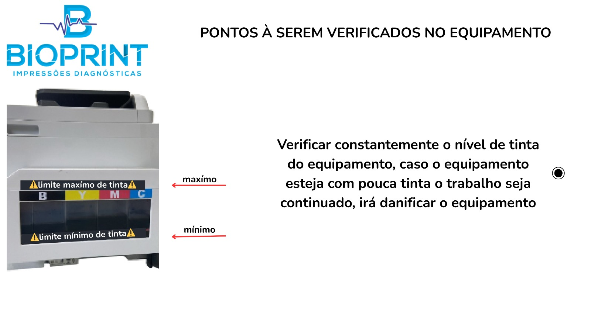
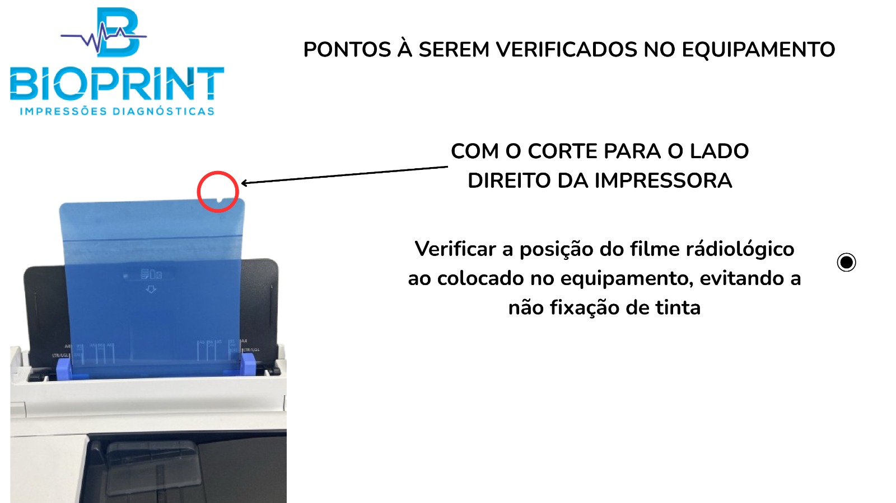
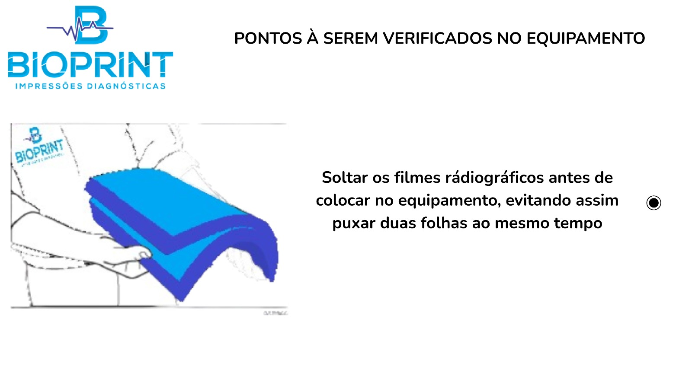
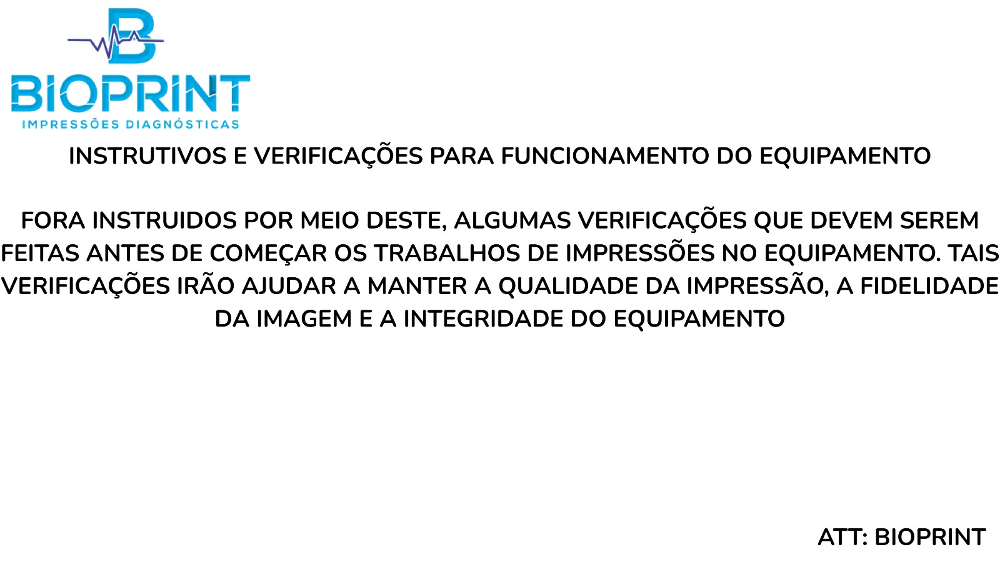

Instruções de Verificação - BIOPRINT
Verificações pré-uso
1. Verificação do Nível de Tinta

2. Posição Correta do Filme Radiológico

3. Separação dos Filmes Radiográficos

4. Aviso Geral de Verificações
